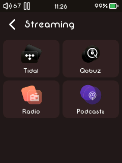

V1 firmware 1.3
- Basic library and playback screens
- Graphic EQ and standard streaming apps
- Limited themes, tools and on-device tuning
Community firmware · TempoTec Variations V1
Sonix replaces the stock 1.3 music player with a faster, deeper, endlessly tunable listening machine — built from the official V1 update package and made for that little 240×320 screen.
Checking GitHub Releases for the latest version…
Tap the touchscreen or use the side keys. Open microSD in the workbench and drop in your own audio to hear it in the emulator.
Beyond stock 1.3
This fork starts with the official V1 1.3 update package, swaps the stock music app and interface for Sonix, and repackages it as v1.upt. It is a firmware application, not a new kernel or Linux distribution — your V1 stays a V1.
Feature tour
Optional modules can be switched off under Settings → Plugins, so the pages you never use do not take up RAM.
Shape the sound, then take it anywhere.
Two independent parametric profiles for two pairs of headphones, one-tap control-centre switching, AutoEq presets and MSEB tuning. Draw curves on a PC over Live USB or dial in frequency, gain and Q on the V1.
Settings → EqualizerUp to 24-bit/192 kHz FLAC with persistent sign-in, playlists and downloads to Music/Qobuz Downloads. A configurable SD cache keeps your favourites ready without Wi-Fi.
Point the player at your own server, browse artists and folders, stream on Wi-Fi or save whole albums to the card for offline listening. Self-signed certificates are supported.
Streaming → SubsonicBrowse a network folder, then save tracks or the current album straight to Music/Network Downloads. Save and play starts the file once the copy has finished.
Two V1s, one listening session. Start hosting on the player that has the music, join from the other on the same Wi-Fi, and hear the same track in sync.
Streaming → Listen TogetherTools that turn a DAP into a little studio.
Sixteen pads, custom WAV kits, trim and slice markers, chromatic pitch resampling and choke groups. Overdub a one-bar loop with live filter, echo and drive, then record the stereo mix to microSD.
More → Tape DeckInspect and edit FLAC, MP3, M4A, AAC, Opus and Ogg tags on the device, and look up missing album art over Wi-Fi. No desktop tagging round-trip required.
More → Tag ManagerPair a browser by QR code or session code, then drop whole album folders onto the microSD card with their paths intact. Great for moving a library without pulling the card.
Wireless → TransferBass Pulse, Energy Glow or Rainbow Breath with ten brightness steps. Red blinks warn at low battery, green confirms uploads and updates — and Stealth keeps the light off even while charging.
Settings → PowerThe small delights that make it yours.
See what you actually listened to by week, month, year or all time — your own wrapped-style recap of top tracks, albums and artists. Plays count only after you have really heard them.
Music → StatsBrowse four covers at a time, with optional folder artwork and cover grids in the file browser. A better fit for a portrait screen than a long list.
Settings → Music → LibraryDrop two markers from the track menu to repeat a passage on any seekable file; both points stay visible on the progress bar.
Now Playing → Track menuCheck voltage and estimated runtime, compare draw against a saved baseline, and review charge history to learn how your V1 behaves.
Settings → SystemA little companion that grows from the music you hear. Feed it, hit a daily listening goal, earn Musical Notes and dress it up from the wardrobe.
More → PetPlay Game Boy / Game Boy Color cartridges with a cover-art grid and game-audio mute, or kill time with 2048, Snake, Dino and Flappy Bird.
More → Games



Quick installation & safety
The update is a v1.upt package for the TempoTec Variations V1 only. Keep your player charged and do not interrupt the update.
Copy the official V1 v1.upt and its matching v1_md5.txt somewhere safe. They are your way back to stock firmware.
Download the latest v1.upt below and place it in the root of your microSD card — not inside a folder. Run the V1's built-in firmware updater and let it finish.
Copy the original vendor v1.upt and its checksum file back to the card root and use the same update process to restore stock.
Before you flash: back up your music, use a charged player, and only install packages built for the Variations V1. See the full install guide and troubleshooting notes if anything looks wrong.
Latest build
The button always points at the newest v1.upt asset from GitHub Releases, fetched fresh in your browser.
Fetching release details…
For maintainers: GitHub Pages cannot set custom headers, so coi-serviceworker.js sits at the site root to enable SharedArrayBuffer / WASM pthreads. Every local path here is relative (./assets/…, ./emulator/…) so the site also works from the /sonix-player-tempotec-v1/ project subpath.